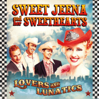

Sweet Jeena and her Sweethearts - Lovers and Lunatics (Album, 2013)
01 - How Much Longer To Las Vegas (3:47)
02 - Ready For Love (2:14)
03 - Mean Cat (2:54)
04 - Moon Rocket Rock (2:58)
05 - Lovers And Lunatics (2:55)
06 - Happy Little Cowgirl (2:54)
07 - Everday Sweet (3:08)
08 - Lonely Girl (2:20)
09 - Cowboy's Song (3:06)
10 - Fish Dish (3:13)
11 - Big Woman (4:21)
12 - Always A Party (2:51)
13 - Cool Cat (3:35)
© Jeenarecords :: [6417138614520 / CDJEENA02]
Notes
Review
059/366 (Project 366)
Full of rockin' comedy entertainment with Rockabilly influence and related tunes. Actually, quite many fancy and comic acts there. However, stylish and pretty genred things also exists. Looney blend of variety sensations, charming schlager shine and lazy honky sound feels like a vintage glossy film strip. A very conceptual thing. And probably for the listeners who are ready for such wildy and sweet experimental tunes. This is not like a Music hall, but still with high attention to the performers.